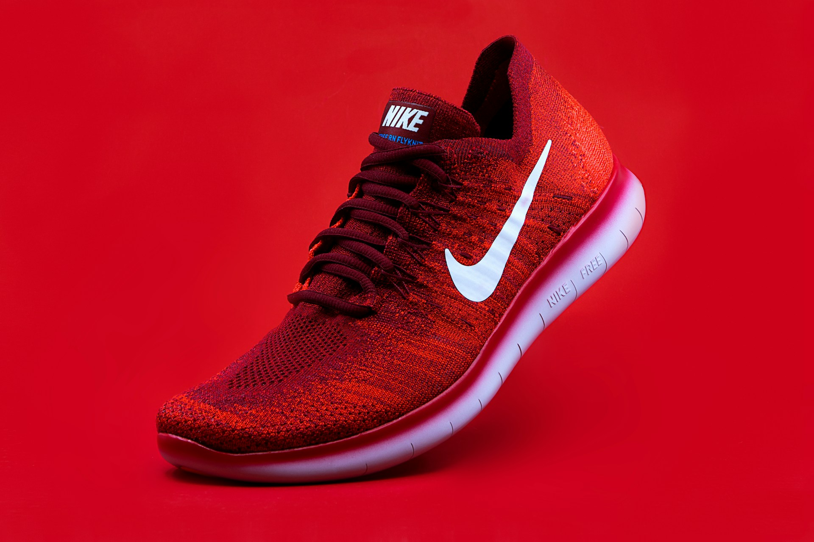
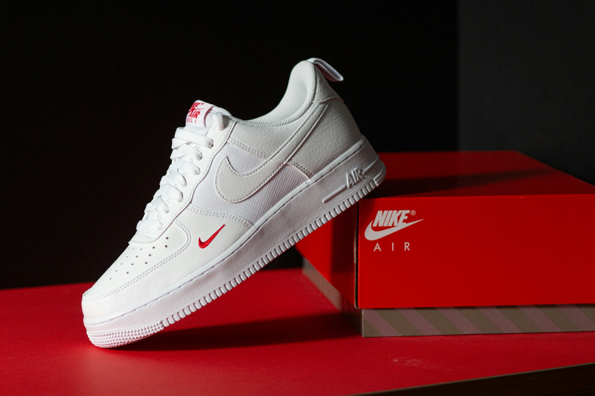
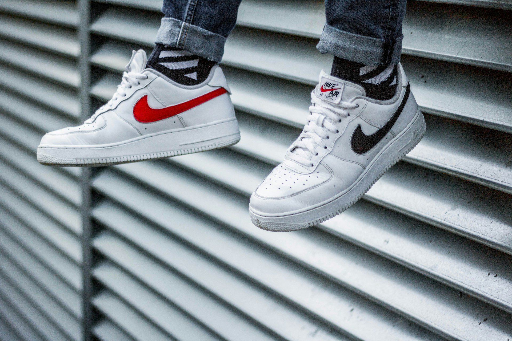

The Challenge
Pace had a strong shoe and athlete tests, but the brand read like a spec sheet: lots of foam names, no emotional hook. They needed a story runners could repeat in one sentence—and digital that felt fast and human, not like a medical device brochure.
What I Did
I wrote a tighter positioning around momentum for everyday miles (not podiums), then designed a wordmark with forward motion baked in. The landing page leads with feeling—route, weather, rhythm—before tech specs. I structured a lookbook so their photographer could shoot consistently.


Keep exploring.

Epoch
Brand and digital launch for a premium everyday watch—positioning, D2C site, and campaign visuals I art-directed alongside the founder.

Cove
Packaging and Shopify visuals for a small-batch organic coconut oil brand—earthy, trustworthy, and shelf-ready without looking like every other jar on the aisle.

Ripple
Brand world for a low-ABV sparkling spritzer—label system, flavor architecture, and a launch site that feels like summer without looking like soda.